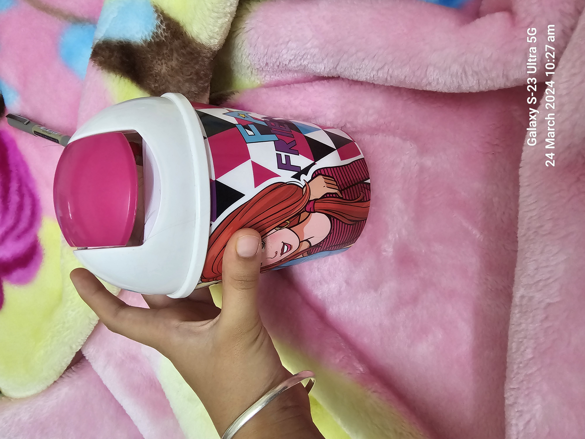

Case studies
Test Image 1
Output on Google Lens:
Digital CLOCK
Output on Mobilenet Project:
digital CLOCK
Result: Both gave the right answer
Test Image 2

Output on google lens:
dustbin
Output on Mobilenet Project:
water bottel
Result: Google is more accurate
Test Image 3
Output on google lens:
Kindle
Output on Mobilenet Project:
i-pod
Result: Google lens is more accurate
Test Image 4
Output on google lens:
Watch
Output on Mobilenet Project:
analog clock
Result: Google lens is more accurate
Out Of five Objects Google Lens was accurate most of the times